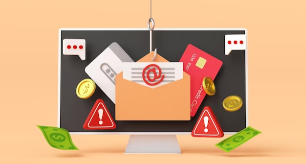

As the number of cyberattacks continues to grow, it's important to be aware of the different types of attacks and how to prevent them. Phishing is a type of attack where the attacker tries to trick the victim into giving them sensitive information, such as passwords or credit card numbers. There are a few different ways to prevent phishing attacks using technological defenses.
Systems administrators can take many approaches to ensure the maliciousness of phishing emails is minimized, including by implementing software that can help stop attacks from the outset. A firewall and anti-spam protection tools form the core of some important measures to keep malicious activity from being performed on a system. Most system administrators are familiar with these tools, but you should enable anti-spam filters to keep your inboxes clear of spam. Highly targeted attacks are more difficult to counter for this reason; spam filters don't know whether or not an email is coming from a malicious source.
Let's take a look at a more technical trajectory of this process. In addition to terminating similar domains, businesses should also filter out duplicates.
Configure mail servers with Sender Policy Framework (SPF): SPF prevents the rejection of any email by blocking emails from domains that have not verified their DNS entries or approval addresses. SPF works by checking incoming emails against the approved DNS entries and sending addresses compiled by experts.
Domain Keys Identified Mail (DKIM): should also be set up and required for all mail servers. Both SPF and DKIM verify that the origin of emails looks legitimate, but SPF is the approved list of servers to send messages on behalf of your domain. This list of approved servers is published by DNS and verified by the recipient server when received. This one differs from DKIM, which allows the recipient to confirm that the message was not modified after being sent from the trusted email server.
DKIM (Domain Key Identified Mail) is a method for experts to sign their emails to assure their validity, and any published servers generate a public and private cryptographic key pair. Those that are determined using a DKIM key to sign messages from a domain in the public mailing list. When an email is sent, the server attaches the digital signature to the message with private DKIM, and the recipient confirms this signature against the public DKIM that was registered on DNS to verify it's valid.
Domain Message Authentication Reporting & Conformance (DMARC): All mail servers in a department must implement DMARC, which you can define to set up a system sending your page. DMARC is an extension of SPF and DKIM, allowing the administrator of sending systems to specify rules for incoming mail. Once DMARC guidelines are set, a Domain Name System record is created that specifies how to deal with emails that don't fulfill your SPF or DKIM requirements.
The added security offered by an additional form of email verification can be achieved by implementing a solution that provides both client-side and server-side PGP, GPG, SMIME, and other tools to sign emails using public and private keys (Public Key Infrastructure) for each sender. The recipient can then verify the digital signatures of the emails and verify their authenticity. These electronic signatures are similar to those of DKIM but are used by the recipient, whereas DKIM signatures are analyzed by the email server.

Ensuring patches are increasing for systems and antivirus software is important because attackers may use browser exploits or file attachments to infect a system. This leads to malware being installed on a computer or making its way throughout the network.
Divide your network into different sections (or divisions) to limit access to each respective segment, and make sure that each user only has the access that they are authorized to have. By doing this you can limit your exposure to threats by reducing the number of people who have access to sensitive information or systems.
In a nutshell, Phishing attacks are more dangerous and sophisticated than ever before. They target businesses and individual consumers alike. The stakes are higher, and the costs greater, so now is the right time to implement technological defenses that are effective at reducing phishing attacks.